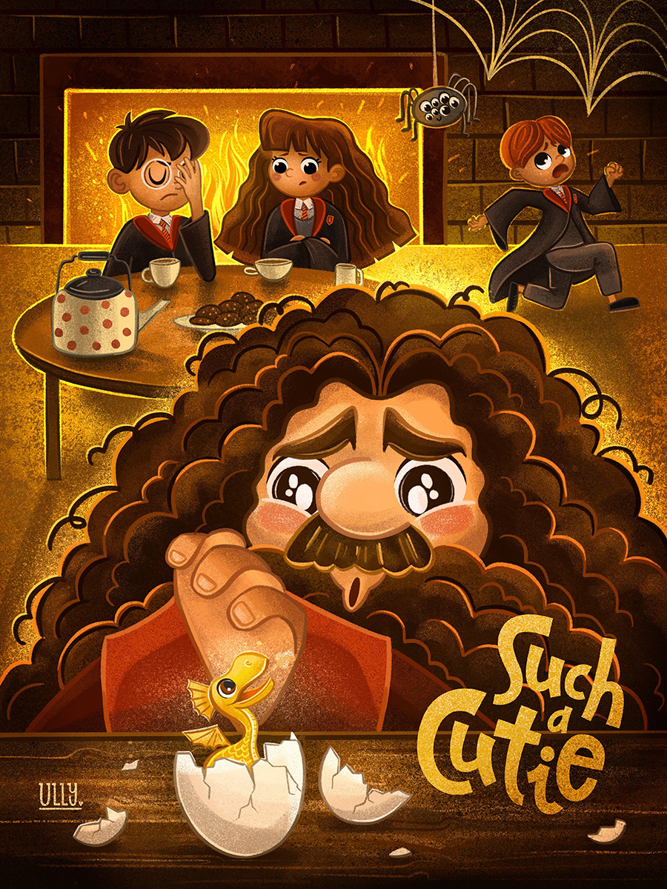

I'm a travel enthusiast who loves to go on a very long road trips, eespecially on motorcycles. I recently got this interest after seeing, people travelling places around the world. my dream is to explore an unexplored place and its beauty on motorcycle. Ofcourse its a very stressfull and energy consuming thing to drive for that long periods of time, but i believe with a right company of friends it would be a life time memory to cherish.
One of the main reasons that the series has become so loved is it's attention to detail and the costumes, clothing choices and descriptions of the characters. Think Harry's lightening-shaped scar, his broken glasses and his "mother's eyes"
